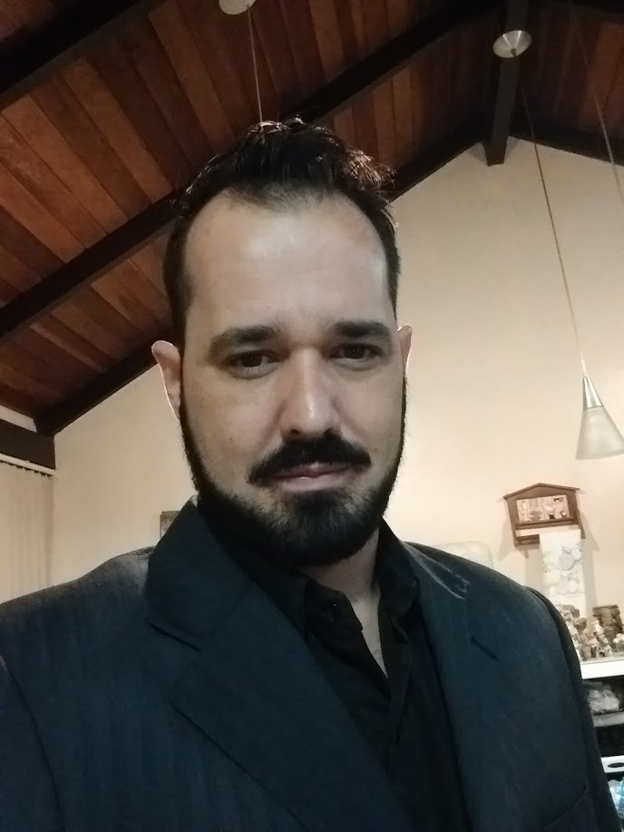

Olá!
Meu nome é Rafael e sou estudante de Análise de Sistemas.
Meu primeiro contato com desenvolvimento de software surgiu durante a formação técnica em Mecatrônica. Em 2016, escrevi minhas primeiras linhas em C, ao mesmo tempo em que explorava linguagens de automação como Ladder e SCL, além de protocolos industriais como Ethernet/IP, RS-485 e Modbus-TCP. Tive a sorte de aprender com professores que valorizavam a lógica em seu nível mais essencial: portas lógicas, álgebra booleana, Teoremas de De Morgan, Mapas de Karnaugh. Desde cedo, fui incentivado a pensar no detalhe, no bit, e a transferir essa disciplina para qualquer outro domínio.
Mais tarde, ao cursar Automação Industrial, percebi que as fronteiras entre programação e tecnologia industrial estavam mudando: surgiam CLPs com suporte a C++. Foi natural decidir seguir para Análise de Sistemas. Minha primeira providência foi aprofundar os estudos em C++, por conta própria.
As aplicações diante de mim pareciam infinitas: telemetria, IoT, integração com sistemas de gestão, análise de dados. Quanto mais aprendia, mais percebia que era impossível conhecer tudo antecipadamente. Não se tratava apenas de linguagens ou stacks, mas de compreender fundamentos: o dado, o sistema operacional (uso Debian), as redes, as ferramentas que sustentam o processo (versionamento, containers). Em outras palavras, era preciso aprender a aprender, e ver o software no contexto em que ele opera também.
Essa abordagem me levou a experimentar: Java, C#, padrões de projeto, desenvolvimento web quando necessário — HTML, CSS, JS, servidores locais, Docker. Prefiro não me limitar apenas à IDE: cada necessidade mostra o que estudar e em qual profundidade. Decidi seguir o caminho longo, construindo projetos simples, mas funcionais, sempre atentos ao detalhe e ao propósito.
Curiosidade e disciplina são meus guias. E acredito que isso me torna capaz de enfrentar os problemas reais que ainda estão por vir.